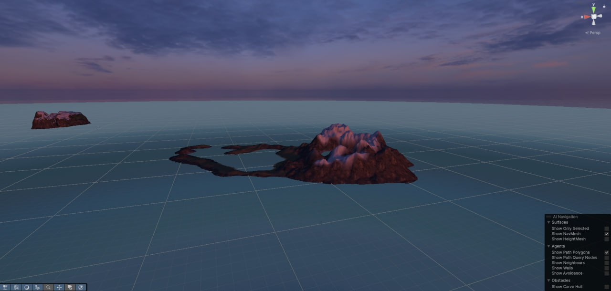
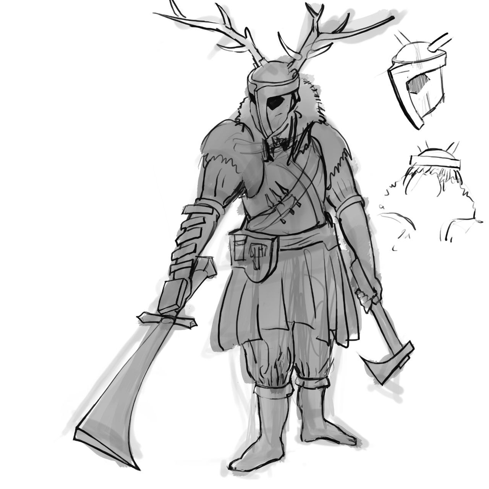

Новости разработки
Улучшения в Сюжете и Детализация
Мы продолжаем работу над детализацией сюжета, стараясь сделать его максимально захватывающим и интересным. В последнем обновлении мы добавили больше деталей в последнее действие в сюжете, чтобы сделать его более понятным и увлекательным. Мы стремимся создать глубокий и проработанный мир для наших игроков.
Играбельный билд и Тестирование
Рады сообщить о выпуске нового играбельного билда! В этом билде представлена сцена для тестирования предметов, что позволит нам лучше отладить игровые механики.
Улучшения Интерфейса и Управления
Мы внесли ряд улучшений в интерфейс и управление, чтобы сделать игру более удобной и интуитивно понятной:
- Добавлены подсказки по управлению, чтобы помочь игрокам освоиться с игровым процессом.
- Реализована возможность перезапуска сцены через меню, что упрощает тестирование и повторное прохождение.
- Добавлена обводка интерактивных объектов, чтобы игрокам было проще взаимодействовать с игровым миром.
Новый Игровой Остров: Ольфа
Мы рады представить вам Ольфу - второй игровой остров, вдохновленный скандинавскими островами. Этот остров имеет больший масштаб и обещает предложить игрокам новые приключения и открытия.
Визуальные Улучшения
Мы работаем над улучшением визуальной составляющей игры. Были созданы новые арты для локаций для вдохновения.
Разработка Инвентаря и Квестов
Параллельно с другими задачами мы активно работаем над двумя важными системами:
- Добавлен UI инвентаря, что позволит игрокам управлять своим снаряжением и предметами.
- Начата разработка квестовой системы.